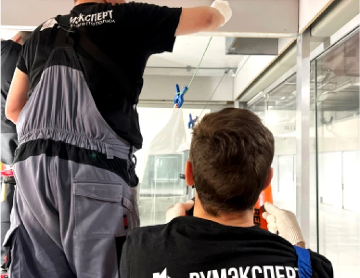

Отбиваем уровень, на котором планируется установить натяжной потолок
Отбивка уровня
Отбиваем уровень, на котором планируется установить натяжной потолок
Разметка крепления профиля
Перед креплением профиля обговариваем на каком уровне будет установлен потолок
Крепление профиля
Устанавливаем по лазерному уровню монтажный профиль (багет).
Установка закладных
Этап установки закладных конструкции под осветительные приборы, карнизы, шкафы-купе и др.
Обвод трубы
Выполняем скрытый обвод трубы, далее монтаж потолка с ближайшего к обводу угла
Крепление полотна
Натяжной потолок по углам закрепляют на зажимы и частично заправляют в багет

Заправляем полотно
Нагреваем полотно и легко заправляем в оставшиеся углы и по всему периметру
Вырезаем место под освещение
Прощупываем закладные, приклеиваем термокольца и прорезаем отверстия для них
Маскируем стык
Устанавливаем взазор 3–5 мм между между стеной и профилем вставку в цвет полотна
Рассмотрим процесс установки натяжного потолка
По индивидуальным размерам заказчика в компании Румэксперт изготавливают полотно. Сначала лазерным уровнем отбиваем расстояние, на котором планируется установить натяжной потолок и фиксируется профильная система.
В зависимости от типа конструкции, вида освещения и особенностей комнаты, выполняются все поставленные задачи по обходам и монтажу комплектующих. Затем, натягиваем полотно, постепенно прогревая его тепловой пушкой для достижения нужной эластичности. Либо фиксируем сразу, если это ткань или ПВХ Cold Stretch холодной натяжки.
Готовый результат принимает заказчик, подписывая акт выполненных работ.